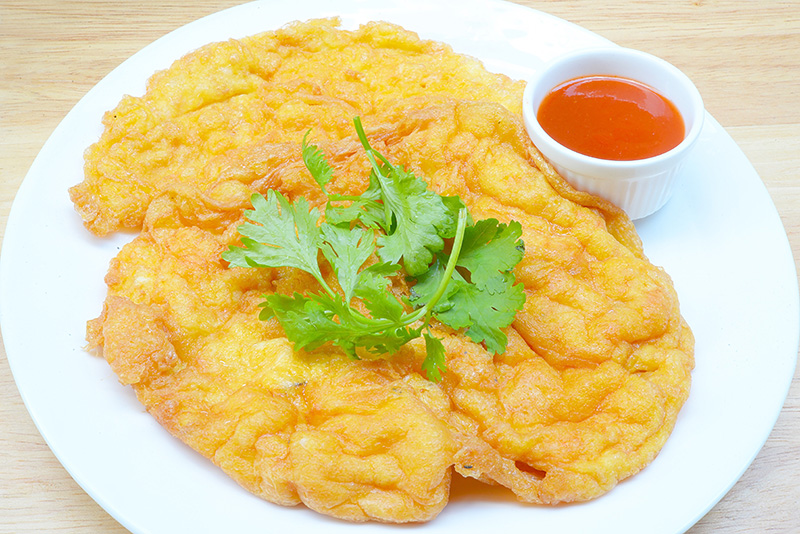
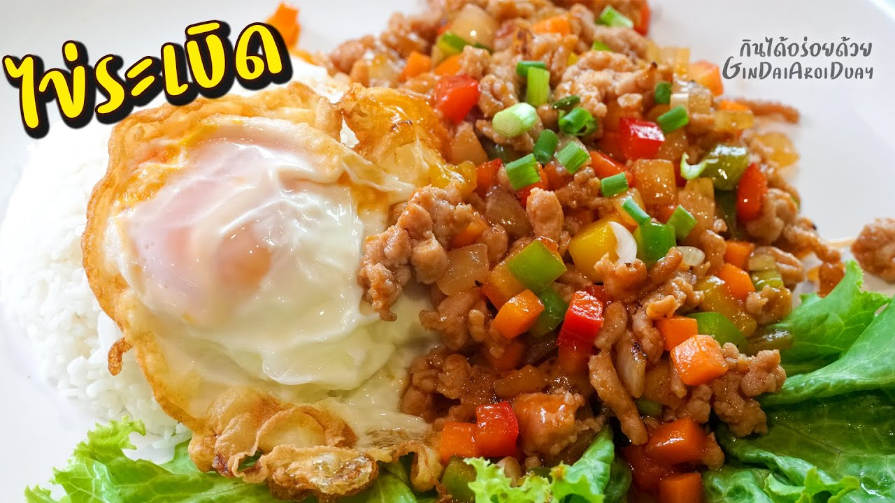
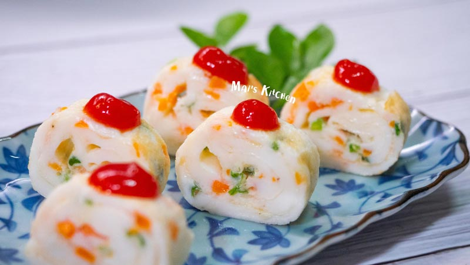

ไข่เจียวกุ้งสับ

ส่วนผสมไข่เจียวกุ้งสับ
- กุ้งสดสับหยาบ
- ไข่ไก่
- ผมปรุงรส
- นํ้ามันหอย
- พริกไทยป่น
- นํ้าปลา
- ต้นหอมซอย
- กุ้งสด
วิธีการทําไข่เจียวกุ้งสับ
- ตอกไข่ใส่ชาม ปรุงรสตามชอบ ใส่ต้นหอม ตีผสมจนเข้ากัน ใส่กุ้งสับลงไป ตีผสมจนเข้ากันอีกครั้ง
- ตั้งกระทะใส่น้ำมันลงไป รอจนน้ำมันร้อน เทไข่ลงไป ทอดจนไข่สุกทั้งสองด้าน ตักใส่จาน เตรียมไว้
- ใส่กุ้งสดลงไปผัดจนสุก นำไปโรยบนไข่เจียวกุ้งสับให้สวยงาม
ไข่ระเบิด

ส่วนผสมไข่ระเบิด
- กระเทียมสับ
- ไข่ไก่
- หมูสับ 60 กรัม
- นข้าวโพดอ่อน
- แครอต
- มะเขือเทศราชินี
- เห็ดหูหนู
- หน่อไม้ฝรั่ง
- หอมใหญ่
- ซอสมะเขือเทศ 3 ช้อนโต๊ะ
- ซีอิ๊วขาว 1 1/2 ช้อนโต๊ะ
- พริกไทยป่น
- น้ำเปล่า 5 ช้อนโต๊ะ
- ต้นหอม
- ข้าวสวยหุง
- น้ำมันพืช (สำหรับทอดและผัด)
วิธีการทําไข่ระเบิด
- หั่นและซอยผักทั้งหมดเป็นชิ้นเล็ก ๆ เตรียมไว้
- ทอดไข่ดาวให้สุกตามชอบ ตักขึ้นโปะบนข้าวสวย พักไว้
- ใส่น้ำมันพืชลงในกระทะ พอร้อนใส่กระเทียมสับลงไปเจียวพอหอม ตามด้วยหมูสับ ผัดให้พอสุก
- ใส่ผักทั้งหมดลงไปผัดให้เข้ากัน ปรุงรสด้วยซอสมะเขือเทศ น้ำตาลทราย ซีอิ๊วขาว และพริกไทยป่นเล็กน้อย เติมน้ำเปล่าลงไปแล้วผัดให้ส่วนผสมทั้งหมดเข้ากัน ชิมรสตามชอบ
- ตักส่วนผสมราดลงบนไข่ดาวที่เตรียมไว้ โรยต้นหอมซอย พร้อมเสิร์ฟ
ไข่ขาวม้วน

ส่วนผสมไข่ขาวม้วน
- ไข่ขาว 1 ถ้วย
- แครอต
- ต้นหอม
- พริกไทย
- ซอยพริก ซอสมะเขือเทศ หรือโชยุ
วิธีการทําไข่ขาวม้วน
- นำไข่ขาวที่เหลือจากการทำอาหารมาใช้ต่อได้เลย หรือถ้ายังไม่ใช้ทันทีให้เก็บใส่ขวดหรือคลุมพลาสติกถนอมอาหารแล้วเก็บไว้ในตู้เย็น ใส่ผักที่เตรียมไว้ได้ตามใจชอบเลย ปรุงรสด้วยพริกไทยอย่างเดียว
- คนไข่เบา ๆ แต่อย่าตีไข่เหมือนทำไข่เจียว ฟองจะเยอะ เวลาเอาไปลงกระทะจะมีฟองอากาศ ผิวไข่จะไม่เนียนสวย
-
ตั้งกระทะเทฟลอนใช้ไฟอ่อนสุด เทไข่ไม่หนาหรือบางจนเกินไป อย่าลืมเหลือไข่ไว้ด้วยเพราะจะต้องใช้ไข่ที่เหลือต่อแผ่นไข่ให้ได้ไข่ม้วนหลายชั้น ฐานกระทะยิ่งกว้างก็จะยิ่งได้ไข่ม้วนชิ้นใหญ่ วิธีดูไข่สุกได้ที่หรือยัง ให้ลองเขย่าหรือเอียงกระทะ ถ้ายังมีไข่เป็นน้ำใส ๆ อยู่ด้านบนไหลอยู่ให้โดนความร้อนต่อไปอีกสักพักถึงจะเริ่มม้วนได้ หาพวกตะเกียบหรือที่คีบมาช่วยก็ดี ทำสองมือเลยจะได้ถนัด หยอดไข่ลงไปเพื่อต่อแผ่นไข่ให้สามารถม้วนได้อีกหลาย ๆ ชั้น สามารถทำจนได้ขนาดที่ต้องการ 2-3 รอบก็ได้ พอม้วนมาถึงขอบไข่ให้นาบกับกระทะไว้แป๊บหนึ่งเพื่อให้ไข่โดนความร้อนจะได้ติดกัน
- นำมาหั่นเป็นชิ้นพอดีคำ จะได้ไข่ม้วนหน้าตาเหมือนซูชิโรล จะกินคลีน ๆ ไม่ราดซอสหรือราดซอสก็ได้ตามใจชอบ ถ้าใส่งาขาวคั่วโรยด้วยคงหอมน่าดู